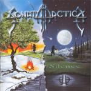

|
|
||
Sonata Arctica : Silence (2001) |
|

http://www.sonataarctica.com |
1. ...of Silence 1:18 |
7.5/10 |
|
Tras dos años de espera, "Silence" es el segundo álbum de los finlandeses Sonata Arctica. Power metal progresivo, con abundancia de teclados y una voz excepcional, son las características de esta banda, que combina a la perfección las baladas más conmovedoras con caciones mucho más rápidas y potentes. Este disco tiene mejor sonido y está más elaborado que su primer álbum, "Ecliptica", aunque creo que musicalmente es mejor aquel. Por cierto, Tony Kakko (el cantante) ha mejorado su inglés desde su anterior trabajo. Tras "...of Silence", una pequeña introducción hablada con fondo musical, "Weballergy" explota con el ritmo frenético de las mejores canciones de Sonata Arctica. "The End of This Chapter" es una canción musicalmente interesante, con buenos arreglos, aunque le falta algo para llegar hasta dentro. De "Land of the Free" destacaré los solos de guitarra, con tintes de metal neoclásico y bastante elaborados. "Last Drop Falls" una bonita balada, con algunas partes desgarradoras, prepara el terreno para "San Sebastian", una de las mejores canciones de este album. Ritmo vertiginoso, estribillo pegadizo y teclados y guitarras trabajando perfectamente conjuntados. "Revontulet" es puro metal neoclásico bastante original y bien ejecutado. Tras "Tallulah", una balada sin nada que aportar, llega "Wolf & Raven", donde la batería vuela y la voz se vuelve más contundente, para construir la canción más potente del album. En general "Silence" es un buen album, pero pocas canciones destacan y casi nada se te queda las primeras veces que lo escuchas. Para apreciarlo hay que escucharlo unas cuantas veces, pero en mi opinión "Ecliptica" fue un trabajo bastante más original e interesante, aunque técnicamente no llegara a la altura de este "Silence". |
||
Rubén Béjar |
||